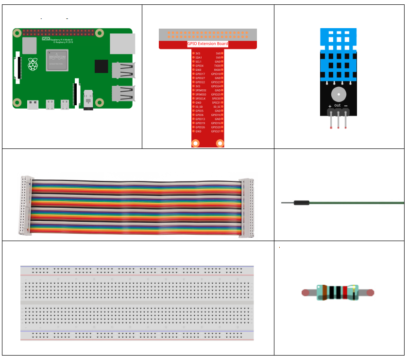

Note
Hello, welcome to the SunFounder Raspberry Pi & Arduino & ESP32 Enthusiasts Community on Facebook! Dive deeper into Raspberry Pi, Arduino, and ESP32 with fellow enthusiasts.
Why Join?
Expert Support: Solve post-sale issues and technical challenges with help from our community and team.
Learn & Share: Exchange tips and tutorials to enhance your skills.
Exclusive Previews: Get early access to new product announcements and sneak peeks.
Special Discounts: Enjoy exclusive discounts on our newest products.
Festive Promotions and Giveaways: Take part in giveaways and holiday promotions.
👉 Ready to explore and create with us? Click [here] and join today!
2.2.3 DHT-11
Introduction
In this lesson, you will learn how to connect and read data from a DHT11 temperature and humidity sensor using a Raspberry Pi. You will learn how to set up the sensor, read temperature in both Celsius and Fahrenheit, and obtain humidity readings. This project introduces you to working with external sensors, handling real-time data, and basic exception handling in Python.
Required Components
In this project, we need the following components.
Schematic Diagram

Experimental Procedures
Step 1: Build the circuit.

Step 2: Go to the folder of the code.
cd ~/davinci-kit-for-raspberry-pi/python_pi5/
Step 3: Run the executable file.
sudo python3 2.2.3_DHT.py
After the code runs, the program will print the temperature and humidity detected by DHT11 on the computer screen.
Warning
If there is an error prompt RuntimeError: Cannot determine SOC peripheral base address, please refer to If gpiozero doesn’t work.
Code
Note
You can Modify/Reset/Copy/Run/Stop the code below. But before that, you need to go to source code path like davinci-kit-for-raspberry-pi/python_pi5.
from gpiozero import OutputDevice, InputDevice
import time
class DHT11():
MAX_DELAY_COUINT = 100
BIT_1_DELAY_COUNT = 10
BITS_LEN = 40
def __init__(self, pin, pull_up=False):
self._pin = pin
self._pull_up = pull_up
def read_data(self):
bit_count = 0
delay_count = 0
bits = ""
# -------------- send start --------------
gpio = OutputDevice(self._pin)
gpio.off()
time.sleep(0.02)
gpio.close()
gpio = InputDevice(self._pin, pull_up=self._pull_up)
# -------------- wait response --------------
while gpio.value == 1:
pass
# -------------- read data --------------
while bit_count < self.BITS_LEN:
while gpio.value == 0:
pass
# st = time.time()
while gpio.value == 1:
delay_count += 1
# break
if delay_count > self.MAX_DELAY_COUINT:
break
if delay_count > self.BIT_1_DELAY_COUNT:
bits += "1"
else:
bits += "0"
delay_count = 0
bit_count += 1
# -------------- verify --------------
humidity_integer = int(bits[0:8], 2)
humidity_decimal = int(bits[8:16], 2)
temperature_integer = int(bits[16:24], 2)
temperature_decimal = int(bits[24:32], 2)
check_sum = int(bits[32:40], 2)
_sum = humidity_integer + humidity_decimal + temperature_integer + temperature_decimal
# print(bits)
# print(humidity_integer, humidity_decimal, temperature_integer, temperature_decimal)
# print(f'sum:{_sum}, check_sum:{check_sum}')
# print()
if check_sum != _sum:
humidity = 0.0
temperature = 0.0
else:
humidity = float(f'{humidity_integer}.{humidity_decimal}')
temperature = float(f'{temperature_integer}.{temperature_decimal}')
# -------------- return --------------
return humidity, temperature
if __name__ == '__main__':
dht11 = DHT11(17)
while True:
humidity, temperature = dht11.read_data()
print(f"{time.time():.3f} temperature:{temperature}°C humidity: {humidity}%")
time.sleep(2)
Code Explanation
def read_data(self):
bit_count = 0
delay_count = 0
bits = ""
# -------------- send start --------------
gpio = OutputDevice(self._pin)
gpio.off()
time.sleep(0.02)
gpio.close()
gpio = InputDevice(self._pin, pull_up=self._pull_up)
#...
This function is used to implement the functions of DHT11. It stores the detected data in the bits[] array. DHT11 transmits data of 40 bits at a time. The first 16 bits are related to humidity, the middle 16 bits are related to temperature, and the last eight bits are used for verification. The data format is:
8bit humidity integer data +8bit humidity decimal data +8bit temperature integer data + 8bit temperature decimal data + 8bit check bit.
When the validity is detected via the check bit, the function returns two results: 1. error; 2. humidity and temperature.
_sum = humidity_integer + humidity_decimal + temperature_integer + temperature_decimal
if check_sum != _sum:
humidity = 0.0
temperature = 0.0
else:
humidity = float(f'{humidity_integer}.{humidity_decimal}')
temperature = float(f'{temperature_integer}.{temperature_decimal}')
For example, if the received date is 00101011(8-bit value of humidity integer) 00000000 (8-bit value of humidity decimal) 00111100 (8-bit value of temperature integer) 00000000 (8-bit value of temperature decimal) 01100111 (check bit)
Calculation:
00101011+00000000+00111100+00000000=01100111.
If the final result is equal to the check bit data, the data transmission is abnormal: return False.
If the final result is equal to the check bit data, the received data is
correct, then there will return humidity and temperature and output
"Humidity =43%，Temperature =60C".